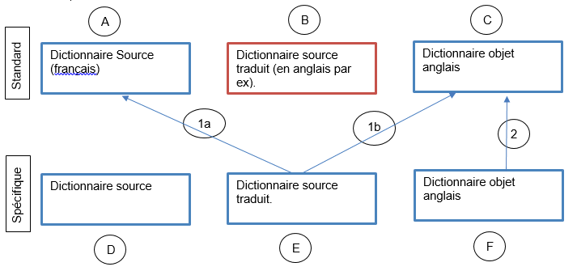

Le but visé par ce choix est de ne pas retraduire dans un dictionnaire des libellés déjà traduits dans un autre dictionnaire dont on ne dispose pas des sources.
Ceci s'obtient en créant un lien entre le libellé non traduit et le libellé déjà traduit.
On évite ainsi l'obligation de retraduire certains libellés, en étant capable d'utiliser leur traduction contenue dans un autre dictionnaire objet.
Exemple :
A l’occasion du développement d’une surcharge de l’ERP Divalto, vous êtes amenés à créer des masques spécifiques. Ces masques font référence à un dictionnaire spécifique.
De nombreux libellés présents dans ces nouveaux masques sont identiques à des libellés présents dans les masques standard de Divalto.
A l’exécution, les traductions des libellés des masques standard sont recherchées dans le dictionnaire objet « standard » de Divalto. De même, les traductions des libellés de vos masques spécifiques sont recherchées dans votre dictionnaire objet spécifique.
Comme vous ne disposez pas des sources du dictionnaire standard, il vous est impossible d’intégrer les traductions standard dans votre dictionnaire spécifique. Ceci vous oblige normalement à retraduire dans votre dictionnaire les libellés communs déjà traduits en standard, ce qui est évidemment une opération redondante et une perte de temps considérable.
Une autre solution consiste à utiliser, depuis votre dictionnaire objet spécifique, les traductions du dictionnaire objet standard.

Contenu de E : Source contenant les traductions spécifiques et les liens vers C pour les libellés non retraduits.
Le choix réalise les opérations suivantes, pour chaque libellé non traduit de E :
Recherche de toutes les occurrences de ce libellé dans A (1a) et de leur traduction respective dans C (1b).
Si ce libellé existe dans A, un lien est établi vers le libellé traduit. La compilation du source E crée le lien entre F et C (2).
Remarque : Si le libellé fait l’objet de plusieurs traductions différentes, le choix de la traduction à considérer est laissé à l’utilisateur (voir le paragraphe « Résolution des ambiguïtés »)
A l'exécution, la traduction des libellés non retraduits est cherchée dans F et trouvée dans C, grâce aux liens établis entre F et C.
Mise en oeuvre du programme
Saisie des paramètres
Il faut spécifier la liste des dictionnaires contenant les traductions des libellés standards (c'est à dire des traductions que vous désirez réutiliser)
On indique pour chaque dictionnaire :
• Le chemin et le nom du dictionnaire de référence (A)
• Le chemin et le nom du dictionnaire objet contenant les traductions (C)
Attention : si le dictionnaire objet est soumis à licences d’utilisation, ce choix vérifie que la licence est disponible.
Résolution des ambiguïtés
Au fur et à mesure de la recherche, xtranslate constitue une liste des libellés pour lesquels il existe plusieurs traductions différentes. A la fin du traitement, il propose à l’utilisateur d’effectuer l’arbitrage pour choisir la meilleure traduction.
L’utilisateur peut choisir une des traductions proposées ou laisser le texte sans traduction si aucune traduction ne convient. Il pourra ensuite saisir sa propre traduction.
Fin du traitement
A la fin du traitement, les libellés à traduire, pour lesquels une traduction a été trouvée, sont marqués « Terminés ». Une étoile dans la colonne « R » indique que la traduction du texte se trouve dans un autre dictionnaire. La colonne du tableau «Localisation de la redirection » contient le nom du dictionnaire et les autres informations habituelles de localisation (par exemple,, le nom du masque, le numéro de la page et l’id de l’objet contenant la traduction).
Saisie dans Xtranslate
Attention : les textes provenant d'autres dictionnaires objets ne peuvent pas être recopiés ou modifiés. Pour saisir une autre traduction pour un libellé, vous devez cliquer sur le bouton <Changer>. Dans ce cas, le lien avec le dictionnaire objet est effacé.
Affichage des masques traduits à l’exécution
Les dictionnaires spécifique (F) et standard (C) doivent être déclarés dans le fichier paramètre des langues TranslateParams.txt. Les libellés du dictionnaire spécifique ayant une traduction standard seront recherchés dans le dictionnaire standard grâce au lien vers celui-ci.